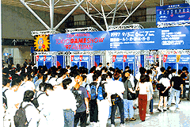

|
展示面積は過去最高の54,000平方メートル、ゆったりと快適な会場に |
「東京ゲームショウ'98 春」では、幕張メッセの1〜8展示ホールを使用した大規模なイベントになります。展示面積は約54,000平方メートルで、これは昨年秋の「東京ゲームショウ'97
秋」の1.3倍、一昨年夏の第1回開催時と比較すると実に3.2倍もの広さになります。
こうして、より広いスペースを確保することで、来場される皆様の快適な環境をご提供する予定です。
| 今回は展示ホール1に約3,500人も収容可能な待機場所を設け、会場内での休憩スペースを確保しました。また、新館を除き展示ホール1〜8までの全館を使用することで、展示場外周を待機エリアとすることができました。これにより、会場敷地内および周辺で約30,000人もの収容が可能です。
|
会場面積が広がったことにより、入場ゲートを前回の6基から18基（予定）に増やします。また、当日券売場も前回の8基から20基（予定）に増加し、スムーズにご入場いただけるよう配慮します。

入場ゲートは前回の3倍！
（東京ゲームショウ'97 秋 より） |
|
| ●好評のファミリー優先入場受付、今回も設置されます |
前回、大好評いただきましたファミリー優先入場受付を今回も設置する事になりました。ご家族でご来場の際、この受付から入場することができます。ファミリー優先入場受付は展示ホール8に設置されます。また、小学生以下を対象にしたキッズコーナーも展示ホール8に設置されます。
|
|
掲載された画像その他の内容の無断転載はお断りいたします。
当ホームページで公開された商品名は一般に各社の登録商標です。 |
 |
|